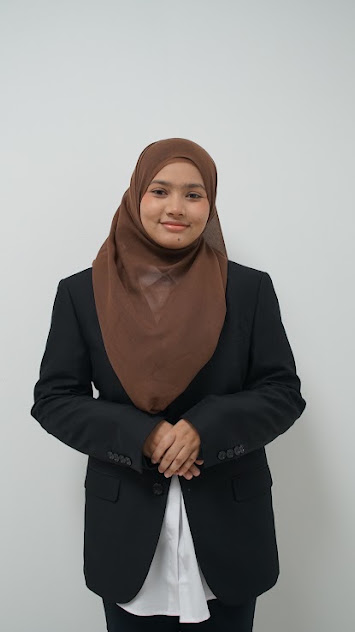

Profile Summary

Undergraduate student combining Linguistics and Information Technology with strong interest in web development, structured data, and clear digital communication.
Education
- Bachelor of Linguistics and Information Technology — Universiti Utara Malaysia
- Sijil Pelajaran Malaysia (SPM)